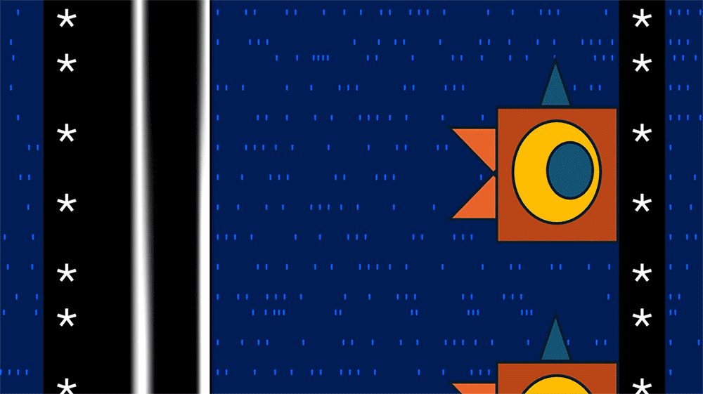

WHIMSY POV
06:30 / 18:30
«Hice una película en Excel» · Maria Tomazou
🎵 Moby Gratis
📱 CENTRO 9:16: Tu cámara / Placa central

➡️ DERECHA: GIF Película en Excel (Maria Tomazou)
🧺 Canasta de armado de tu bloque (Fase 2)
Elegí 2 o 3 tarjetas de la izquierda con ➕ Elegir para mi bloque. Se tejen solas con sus álbumes de fotos y su pauta de ponchado.
1. Tarjetas elegidas para este bloque (0)
📲 Copy con @arrobas y capítulos (YouTube / IG / TikTok / Substack)